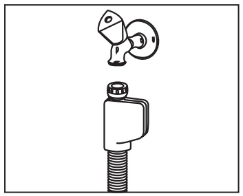

За машината Безопасност и монтаж Сол и препарати Подреждане и пускане Почистване и проблеми
Проект № 16 Ръководство за съдомиялни Teka
Оставете монтажа на квалифициран техник. Преди първото миене проверете дали около машината има теч.
Изберете място, където вратата може да се отвори докрай, за да извадите кошниците. Преди монтажа огледайте машината за повреди. Ако видите повреда, потърсете сервиз.

Aquastop при моделите с такава защита
Системата Aquastop спира водата при теч от входния маркуч. В корпуса има електрически части. Пазете го от потапяне във вода.
Дръжте препаратите далеч от деца. Не стъпвайте върху отворената врата. Изчакайте програмата да приключи, защото при отваряне може да излезе гореща пара.